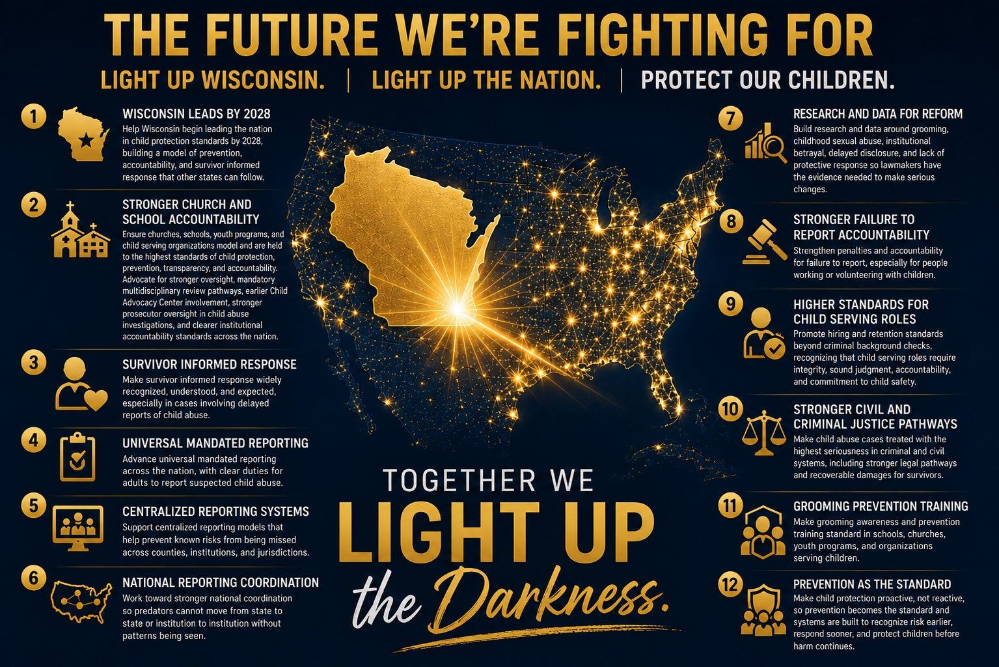

How do we measure the worth of a child?
By the systems we build to protect them.
Why Response Matters
Three research-backed facts that help explain why child-protection systems need strong documentation, response, and follow-through.
Delayed Disclosure Is Common
Children may delay disclosing sexual abuse, sometimes until adulthood.
Systematic review • Adult disclosure reviewFalse Reports Are Uncommon
Intentionally false reports are estimated at approximately 2–8%.
A delayed, unsubstantiated, or unprosecuted report is not, by itself, evidence that it was false.
EVAWI • NSVRCSystems Must Carry the Responsibility
Delayed disclosure and limited early information make documentation and pattern review essential.
Many states already have versions of these protections in place.
Wisconsin can too.
The Future We’re Fighting For
Project Worth is working to identify the strongest child protection policies already being used across the country, study where Wisconsin is falling behind, and help bring the best protections here.
The goal is simple: make Wisconsin the safest state for children in the nation by 2030.
Then help make that protection the standard for every child in the United States.
Does one of these areas speak to you? We would love to connect you with the team members helping move that work forward.

The Case for Change
Explore deeper system gaps, survivor voices, advocates, and partner lights through the Light the Way map.
For the full gap-by-gap view, visit Light the Way and help us build public awareness across Wisconsin and beyond.
Partner in Prevention and Policy Research
Project Worth welcomes researchers, students, advocates, policy minds, and community members who want to help evaluate what is working in child protection, what is failing, and what Wisconsin can learn from stronger models in other states.
Interested in helping us research, review, or compare child protection policies?
Explore the Case for Change and help us Light the Way .